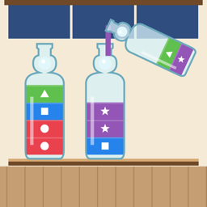

しるしの色水
色ごとに、しるしが浮かぶ色水の並べかえ。色が見分けにくくても、しるしでそろえられます。
ラムネ瓶に4段ずつ入った色水を、別の瓶へ注いで、1つの瓶を1色にそろえるパズルです。注げるのは、行き先が空か、いちばん上が同じ色のときだけです。
- しるし：12色それぞれに、まる・さんかく・しかく・ひし形・ほし・ハートなどの形のしるしが浮かびます。色が見分けにくいときや暗い所でも、しるしでそろえられます（設定で消せます）
- 解ける並びだけ：200面のどれも、瓶を足さずに解けることを、前もって計算で確かめてあります。面の並びは面の番号で決まり、やり直しても同じです
- 最短の手数：その面の最短の手数が出ています。最短でそろえると、ビー玉の印がつきます
- 隠れた色・瓶を足すアイテム・コイン・ライフはありません。1手もどすも、はじめからも、何回でもできます
- 画面いっぱいの広告は出ません（画面のいちばん下の小さな広告だけです）。登録・課金はありません